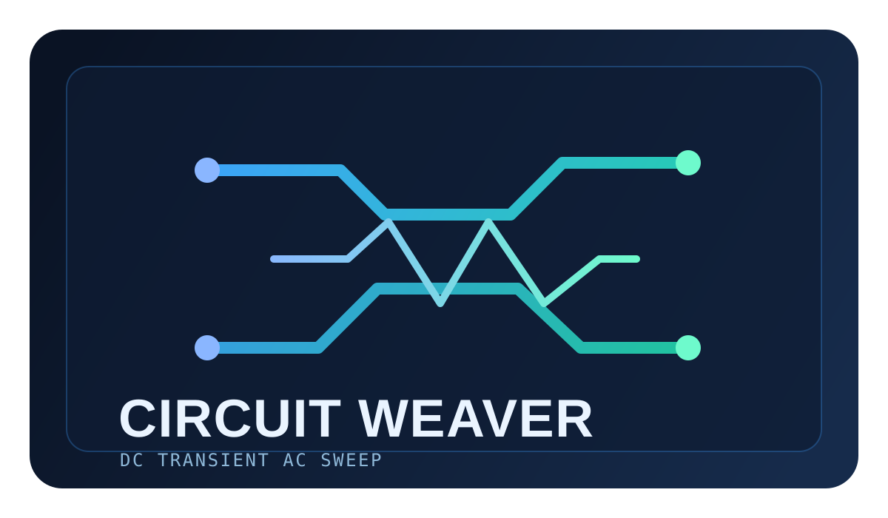

01 // Project
01 // Project
Projects
System Output: Active Development
01 // Project
Museum Database Web Application
Built with MySQL and PHP for structured artifact records, search, and update workflows.

03 // ProjectCircuit Weaver
Advanced circuit analyzer tool built with React, TypeScript, and Vite, with DC, transient, and AC modes.